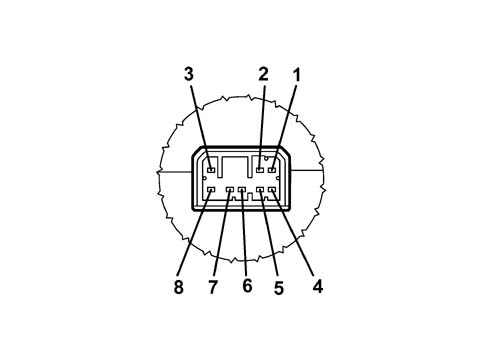

5570TJ SUBWOOFER POWER SUPPLY CHECK
- Path
- Test > 55 ELECTRICAL EQUIPMENT > 5570 ACCESSORIES > 5570T CAR RADIO AND CAR TELEPHONE > 5570TJ SUBWOOFER POWER SUPPLY CHECK
- Kind
- test / check procedure
- Applies to
- all engines; all production periods
- Interactive page
- https://sloeber94.github.io/elrnDB-fPnd/en/#/169001313
Applies to: all engines; all production periods
SUPPLY CHECK
- Switch on the Examiner and enter the "VOLTMETER" ambient.
- Connect the red probe of the voltmeter to pin 3 of the Subwoofer and the black probe to pin 7 (earth) and check that there is a permanent voltage of 12 V.
ACTIVATION CONTROL CHECK
- With the ignition on and the Connect switched on, also check that there is a 12 V activation signal at pin 8 of the Subwoofer.

1. Pin n°1 left audio input (+)
2. Pin n°2 right audio input (+)
3. Pin n°3 +13.5 Vdc power supply
4. Pin n°4 left audio input (-)
5. Pin n°5 right audio input (-)
6. Pin n°6 not connected
7. Pin n°7 earth (GND)
8. Pin n°8 ignition enablement (Key-on)